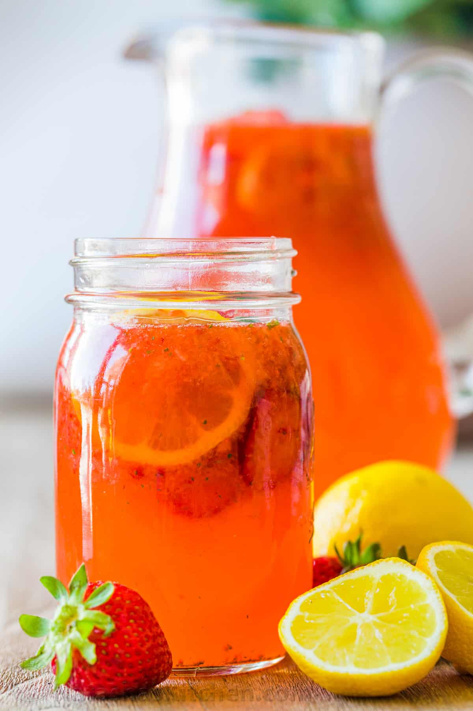

Lemonade

Description
There is nothing like fresh Strawberry Lemonade. If you are craving something cold and refreshing, this is it! Adding fresh strawberries to Classic Lemonade makes it sweet and tangy.
This is my favorite restaurant drink and I especially love getting those bits of fresh strawberry in the straw. It’s actually very easy to make it at home for a fraction of the price.
Ingredients
- Homemade lemonade (1 recipe makes 10 cups), or Frozen Concentrate*
- Strawberries – blend until smooth to add fresh strawberry taste and rosy color.
- Basil – this is optional, but a small handful of basil adds exciting flavor.
- Lemon Slices – add 1 slice to each glass for garnish if desired.
- Ice – add the ice as needed and add just before serving so it doesn’t dilute the lemonade.
Steps
- Make lemonade – prepare homemade lemonade or from concentrate and pour lemonade into a pitcher.
- Strawberries – combine 3/4 of your strawberries with a small handful of basil in a good blender or food processor and blend until smooth.
- Combine – stir strawberry basil mixture into lemonade.
- To Serve – pour lemonade over glasses of ice and garnish with remaining strawberries and lemon slices.